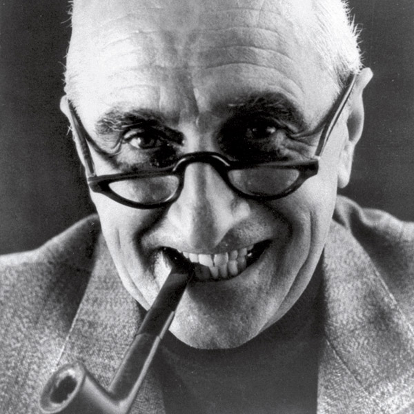
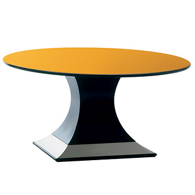
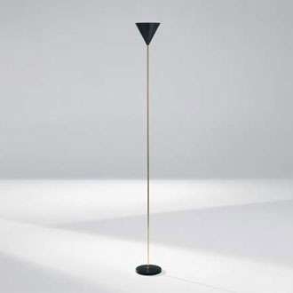
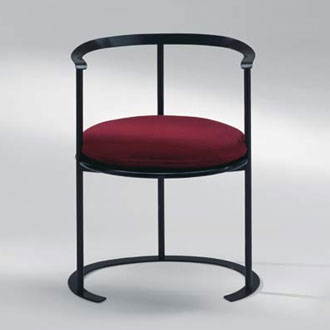
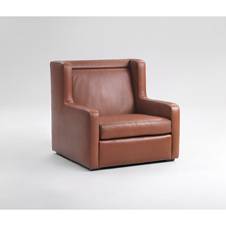

Biography
 Luigi Caccia Dominioni was Born in Milan in 1913.Sono infatti di quegli anni le sue partecipazioni a diverse Triennali - alla VI nel 1936 con la mostra Priorità italiche in arte, alla VII nel 1940 con la presentazione del radioricevitore Phonola a cinque valvole - e ad alcuni importanti concorsi con significative soluzioni innovative. È secondo classificato al concorso per la sistemazione del centro di Fiume nel 1939, vincitore del concorso per la sistemazione del centro di Morbegno nel 1941 e di quello per la scuola di Vimercate nel 1948. Questa intensa attività professionale si fa necessariamente discontinua a causa del richiamo al servizio militare come ufficiale dell'esercito (1939) e del richiamo alle armi durante il conflitto (1941-1943). Nel 1941 sposa Natalia Tosi, dalla quale avrà tre figli. A seguito del suo rifiuto di aderire alla Repubblica di Salò è costretto ancora una volta a sospendere l'attività professionale e nel 1943 si rifugia in Svizzera dove resta fino al 1945.
Base Quadra Table
 Named for its 80 x 80 cm base made for supporting extra-large tops, this dining table has a rare brilliance. The round version has a diameter of 180 or 190 cm and the oval is wide or as Caccia put it "fat" (160 x 210 cm). The polyester gloss lacquer reduces light absorbency making the top into a black reflective mirror. The 16 cm-high steel band on the base protects the table from scuffing and above all, on account of the material and its inclination with respect to the floor, adds a mirrored surface that multiplies the effects of the light. Also in the version with the mahogany top with black gloss lacquered rounded edge, the Base Quadra is one of the many pieces designed by Luigi Caccia Dominioni that emanates indirect light. Table with oval top with black gloss polyester lacquer, "torus" moulding in solid wood, base in wood with stainless steel band, 160 x 205 cm, height 72 cm. Base Quadra top 160 x 205 cm or round diameter 160 cm thickness 25 mm. Available in black gloss polyester lacquer or mahogany veneer with clear polyester finish.
Imbuto floor lamp
 Imbuto (Funnel) is the quintessential floor lamp, a stem of light stretching upwards. It was born as a tribute to the candle, the progenitor of all lamps. So why not extrapolate the essentials of the candle and reconstruct them according to the laws of electricity? A twenty-centimetre circular cast iron base serves to anchor the slim polished or chrome-plated brass stand. The stem dilates ever so slightly at the top, creating a florescent repository that flows into the upturned cone of the reflector and lamp holder. Caccia Dominioni appropriately calls the lamp a “champagne flute” for its stylish form. Today it hosts a halogen lamp that produces a light of purest white to illuminate the surrounding space. Height 192 cm Base in black varnished cast iron, diameter 20 cm. Stand in polished or chrome-plated brass. Reflector in metallic grey aluminium or polished chrome-plated copper, diameter 20 cm. Ceramic E27 socket; recommended bulb: halogen 250W
Catilina Chair
 Catilina was unveiled in 1957 at the 11th Triennale in Milan and it was used in an exhibition of Italian sculptor Francesco Somaini’s works in Como the following year. It has since come to be considered a milestone in the history of Italian design. Catilina has been revisited over the course of the years and is currently available in a number of versions, including a small version (for use with tables), a steel version (plays on reflected light) and a low version (virtually an armchair). The curve of the backrest follows a precisely calculated geometry. The issue was to model an iron bar into a ribbon that would compensate for the severity of the seat. A few short centimetres are all that is required for the ribbon of metal to curve into a comfortable high armrest. By this alchemy the sitter is offered the luxury of gliding their back along the sinuous contours of the backrest while remaining elegantly upright. The frame in metallic automobile grey powdercoated cast iron supports an oval seat in polyester lacquered wood and leather or velvet cushion (size according to model). Large chair in metallic grey iron 73 x 60 cm, height 90cm Seat in black polyester lacquer, height from ground 40 cm, oval cushion in expanded polyurethane foam height 10 cm, in Azucena leather, velvet or customer’s own material (yardage l. 1 m, w. 130 cm). Large low chair in metallic grey iron 73 x 60 cm, height 65cm Seat finished in black polyester lacquer, height from ground 26 cm, oval cushion in expanded polyurethane foam height 4 cm, in Azucena leather, velvet or customer’s own material (yardage l. 1 m, w. 130 cm). Small chair in metallic grey iron or stainless steel 56x46 cm, height 70cm seat finished in black polyester lacquer, seat height 40 cm, oval cushion in expanded polyurethane foam height 3 cm, in Azucena leather, velvet or customer’s own material (yardage l. 60 cm, w. 130 cm). upholstered seat in expanded polyurethane foam with internal frame in wood, seat height 43 cm, covering in Azucena leather, velvet or customer’s own material (yardage l. 60 cm, w. 130 cm).
Sant Ambrogio Armchair
 This elegantly sober straight-backed sofa will sit comfortably against the wall, however, like all Azucena furnishings, it can also be used to define different spaces thanks to the clean, upright lines of the back. The backrest is slightly inclined and the armrests serve to "close off " the lateral perspective with the geometric forms connecting at points of inflection. The base of the sofa has a tied coil spring construction and cushions. It can be covered in any material, although it was originally in soft mohair velvet; traditional colourings are dark green or FFSS red (once used by the Italian railways in its first class carriages). The sides of the Sant'Ambrogio armchair embrace the seat slightly more than for the sofas. This variation was born of the simple but pertinent observation that people sit "front-on" in armchairs, resting their head against the wings. Three-seaters sofa with wooden frame, spiral-sprung seat, upholstery in differentiated-density expanded polyurethane, covered in green mohair velvet, cushions with removable covers.